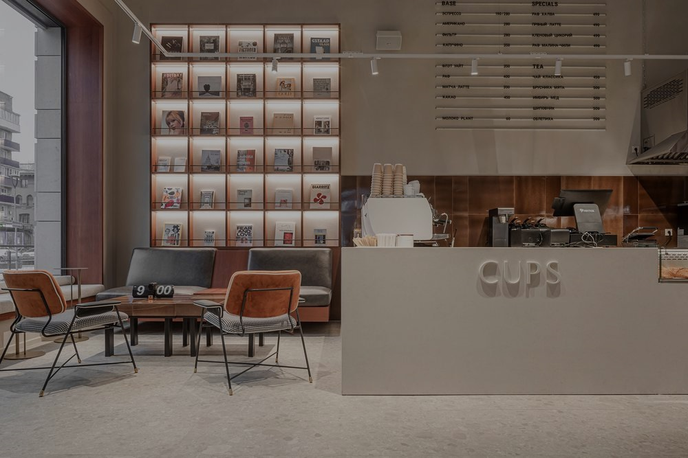

Множество клиентов Рио Де Кафейно оценили наш товар
Более 5000 тысяч оценок наших покупателей
Эти зерна с ноткой лимона — нечто! Ожидал легкой кислинки, но получил яркий, свежий букет, который идеально раскрывается в альтернативных способах заваривания. Как будто пьешь чистый, освежающий эспрессо с цитрусовым послевкусием. Однозначно 5 из 5!
Заявленные ореховые ноты едва уловимы, да и только в первые дни после вскрытия пачки. Уже через неделю зерно теряет аромат и становится плоским. При этом обжарка ровная, сам кофе неплохой, но ожидал большего за такую цену. Тройка авансом — за потенциал, который пока не раскрыт.
Очень достойная арабика с отчетливой ягодной кислинкой. В эспрессо дает приятную сладость черной смородины, но в молочных напитках эта нота почти теряется. Для альтернативы — шикарно, для классического капучино — хотелось бы более выраженного характера. Твердая четверка.
Насыщенный, глубокий вкус с нотами темного шоколада и карамели — просто услада для гурмана. Готовил в турке: раскрылся плотным телом и сладковатым послевкусием без грамма горечи. Идеальный вариант для тех, кто любит кофе как десерт. Пять звезд без колебаний!